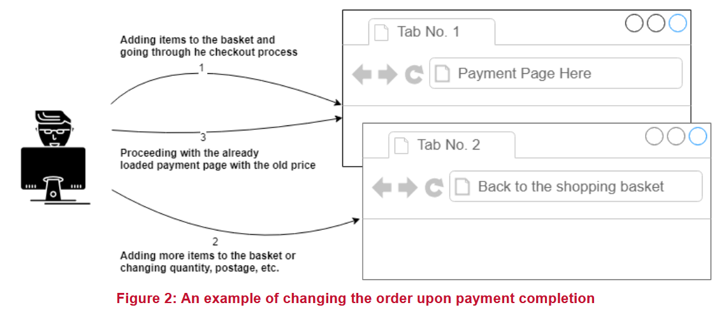

Приложения, позволяющие пользователям изменять свой заказ во время оплаты товара, также могут быть уязвимы, когда отсутствует проверка в конце процесса. Хотя условия гонки при изменении корзины покупок во время обработки платежа кажутся немного сложными, часто в этом нет необходимости, особенно если страница оплаты не является частью приложения, а представляет собой сторонний веб-сайт или внешний модуль. В этом случае заказ можно изменить, пока пользователь находится на странице оплаты и перед нажатием кнопки "оплатить" для завершения платежа. Изменение товаров в корзине, способа доставки и адреса доставки, количества товаров и так далее может повлиять на окончательную цену, в то время как приложение по-прежнему использует первоначальную более низкую цену.
Следующий случай демонстрирует пример этой уязвимости, обнаруженной на рабочем веб-сайте:
Был выбран и добавлен в корзину дешевый товар. Затем пользователь перешел на страницу оформления заказа, чтобы оплатить выбранный товар. На этом этапе, не закрывая страницу оплаты, пользователь открыл основной веб-сайт в новой вкладке браузера (чтобы использовать тот же токен сессии) и добавил в корзину другие, более дорогие товары. После этого пользователь вернулся на первоначальную страницу оформления заказа, открытую в предыдущей вкладке браузера, чтобы завершить оплату первоначального товара. Когда заказ был завершен, все товары в корзине отображались как оплаченные в итоговом чеке. Пользователь мог купить дополнительные товары бесплатно, заплатив только за первоначальный товар.
Эта уязвимость также может существовать в процессе внесения депозита, когда приложение может удерживать балансы пользователей.
NCC Group также столкнулась с редким сценарием, в котором приложение проверяло входные значения и сохраняло их в сеансе независимо от результата проверки. В этом случае приложение не переходило на следующий этап, если входное значение было недействительным. Однако если пользователь переходил на следующий этап, предоставляя действительные значения, а затем повторял предыдущий запрос с недействительными значениями, приложение сохраняло недействительные значения в сеансе и больше не проверяло их, так как пользователь уже прошел этот этап. Это вызвало серьезные логические проблемы для приложения.